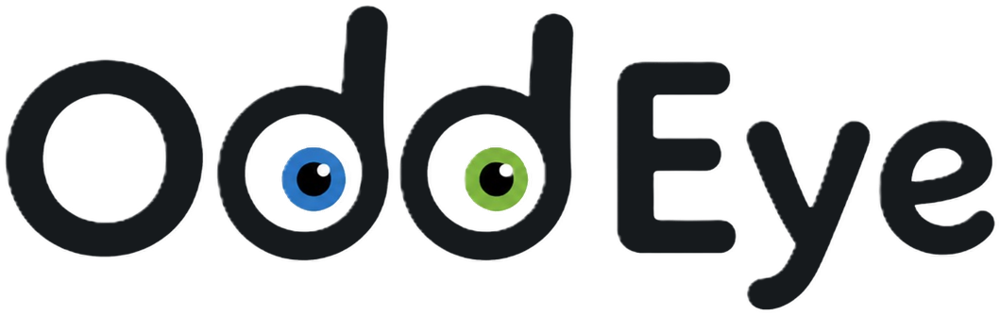
Bridging Pairwise Dense Matching and Incremental Structure-from-Motion
OddEye runs off-the-shelf pairwise dense matchers inside incremental SfM. Fixed per-image anchors link their predictions into multi-view tracks, and cross-view attention from a feed-forward 3D model decides which image pairs to match as the reconstruction grows.
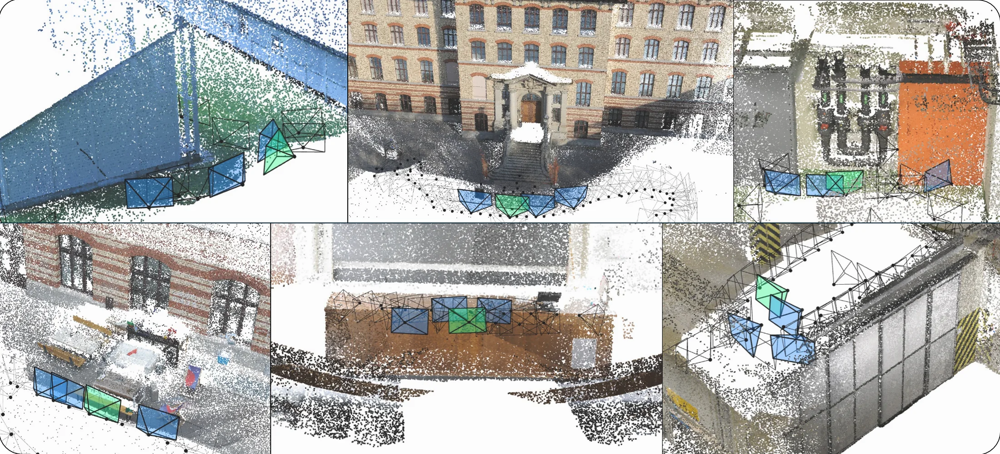
While pairwise dense matchers offer dense coverage and robustness in low-texture scenes, their integration into incremental Structure-from-Motion (SfM) is hindered by two fundamental issues: fragmented multi-view tracks caused by independent pairwise sampling, and a high per-pair matching cost that makes exhaustive matching prohibitive. To overcome these challenges, we present OddEye, an incremental SfM framework that pairs off-the-shelf dense matchers with dynamic, reconstruction-aware scheduling.
First, OddEye enforces consistent observation identities across views by anchoring queries to a fixed set of source coordinates per image, forming well-connected star-shaped multi-view tracks. Second, OddEye extracts a compact geometric prior from the cross-view attention of a feed-forward 3D model, and uses it to dynamically schedule dense matching only between candidate unregistered images and already registered partners.
OddEye attains state-of-the-art results on ETH3D, IMC 2021, and Texture-Poor SfM, achieving 94.98% AUC@3° on ETH3D with RoMa v2. It also delivers a 9.53× speedup on the largest ETH3D scene with negligible pose loss and scales to SMERF scenes of up to 1,874 images, registering 99.8% of images with under 10 GiB of peak GPU memory.
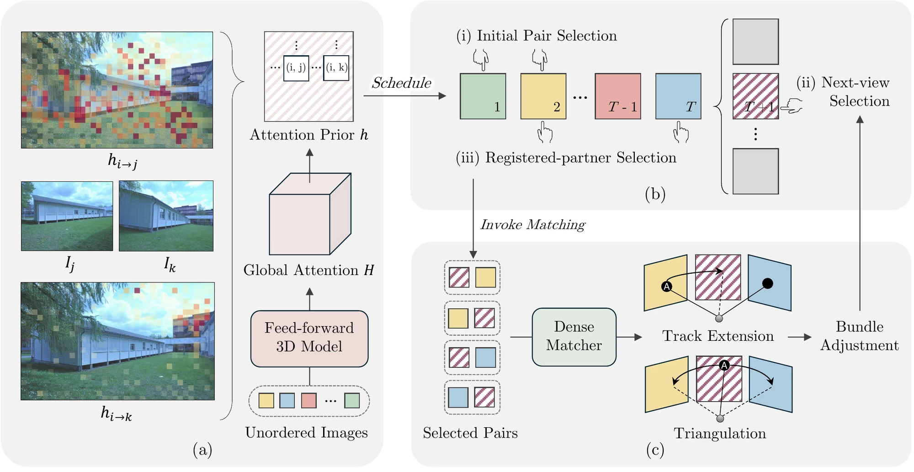
A dense matcher such as RoMa predicts a correspondence field Φi→j and a confidence map for one image pair. To get matches you still have to choose where to read the field. If each pair samples its own source points, matches from image i into j and into k almost never start at the same pixel, so every track stops at two views.
OddEye samples a set of Na anchor coordinates once per image and reads every field with i as the source at exactly those anchors. Matches must pass a confidence threshold, a forward–backward cycle check and epipolar verification. Every verified match from one anchor joins the same star-shaped track, and the target locations stay subpixel, so no learned track refinement is needed.
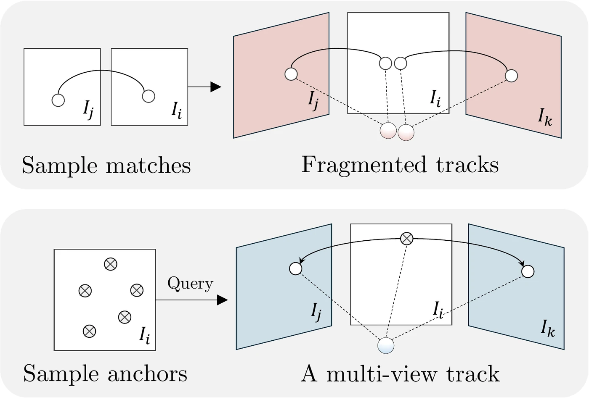
Each pair samples its own source points in Ii. Solid arcs go to Ij, dashed arcs to Ik. No two arcs share a start, so every track has two views.
| Source points | Length | ≥ 3 views | AUC@3° | Reg. |
|---|---|---|---|---|
| Independent | 2.00 | 0.0% | 0.35 | 5.6% |
| + Quantized (16 px) | 2.05 | 5.0% | 43.16 | 55.1% |
| Fixed anchors | 4.98 | 91.1% | 94.89 | 100.0% |
ETH3D with RoMa v2 and the same attention-ranked pair graph for all three rows, so only the choice of source points changes.
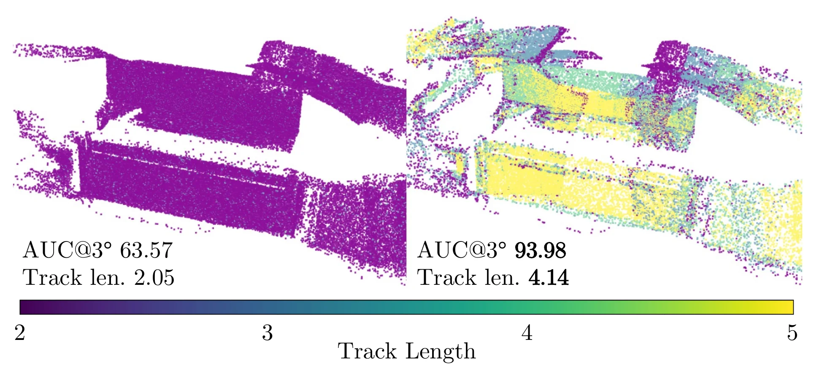
Before reconstruction, OddEye passes all images once through a feed-forward 3D model (DVLT by default). It ignores the predicted cameras and depth and reads one attention head. For a source patch p in image i, the strongest response over the patches of image j gives a patch score hi→j(p). Averaging over patches gives a pair score h̄i→j.
The head is picked once, on held-out Tanks and Temples scenes, by how often its strongest response hits the true corresponding patch. Layer 11, head 0 is right 31.7% of the time and stays fixed for every evaluation scene. Poses and points never come from the 3D model; they come only from verified dense correspondences.
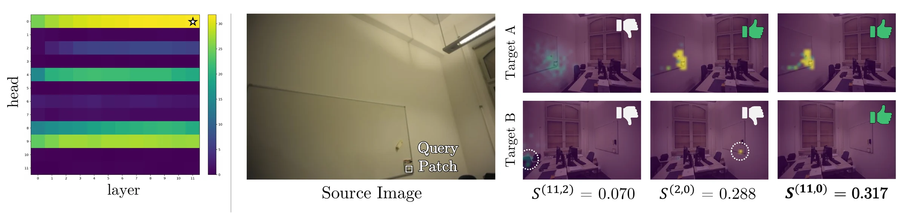
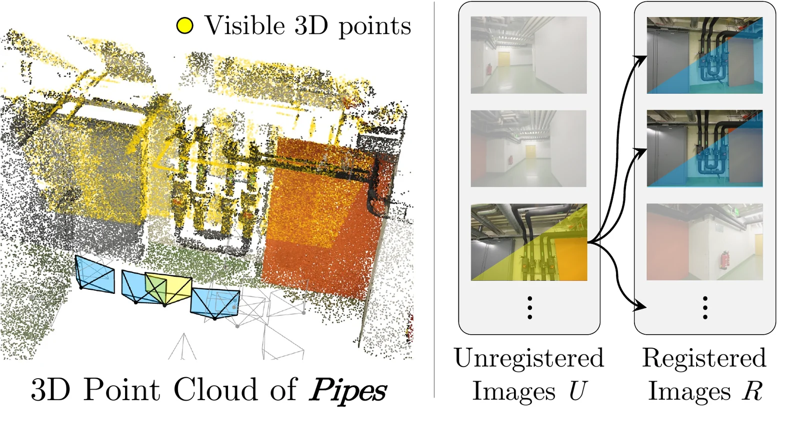
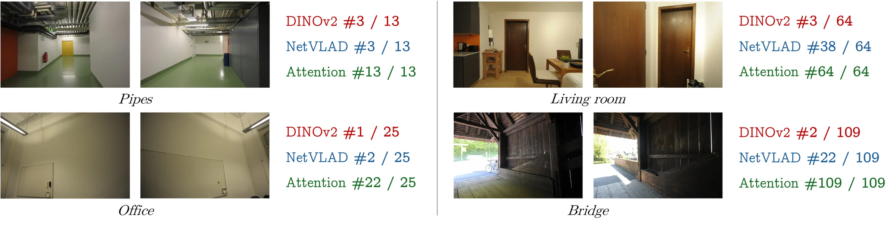
| ETH3D | IMC 2021 | Texture-Poor SfM | ||||||||
|---|---|---|---|---|---|---|---|---|---|---|
| Matcher | Method | @1° | @3° | @5° | @3° | @5° | @10° | @3° | @5° | @10° |
| Detector-based | ||||||||||
| SIFT+NN | COLMAP† | 26.71 | 38.86 | 42.14 | 23.58 | 32.66 | 44.79 | 2.87 | 3.85 | 4.95 |
| SP+SG | PixSfM† | 50.82 | 68.52 | 72.86 | 45.19 | 57.22 | 70.47 | 14.00 | 19.23 | 24.55 |
| End-to-end | ||||||||||
| – | VGGSfM† | 28.09 | 44.41 | 49.91 | 45.23 | 58.89 | 73.92 | 1.86 | 6.26 | 21.10 |
| – | MASt3R-SfM† | 27.05 | 45.84 | 52.61 | 31.77 | 46.36 | 64.37 | 7.10 | 18.08 | 42.44 |
| – | MV-RoMa‡/† | 37.43 | 43.29 | 44.85 | 51.31 | 62.92 | 75.92 | 51.79 | 66.77 | 81.74 |
| (Semi-)dense matching | ||||||||||
| DKM | DetectorFreeSfM‡ | 54.55 | 72.66 | 77.55 | 48.31 | 60.80 | 74.38 | 37.12 | 51.80 | 66.55 |
| DKM | DenseSfM† | 59.04 | 77.73 | 82.20 | 48.65 | 61.09 | 74.37 | 41.19 | 57.26 | 72.95 |
| DKM | OddEye‡ | 74.73 | 83.44 | 85.43 | 51.29 | 63.07 | 75.66 | 45.71 | 60.32 | 74.07 |
| RoMa | DetectorFreeSfM‡ | 57.35 | 75.45 | 80.07 | 48.60 | 61.06 | 74.57 | 48.71 | 64.55 | 79.21 |
| RoMa | DenseSfM† | 60.92 | 78.41 | 82.63 | 48.48 | 60.79 | 73.90 | 49.94 | 66.23 | 81.41 |
| RoMa | OddEye‡ | 78.47 | 87.27 | 89.43 | 52.70 | 64.52 | 77.01 | 54.25 | 67.98 | 80.27 |
| RoMa v2 | DetectorFreeSfM‡ | 62.07 | 80.11 | 84.59 | 49.22 | 61.81 | 75.32 | 58.16 | 73.31 | 86.08 |
| RoMa v2 | OddEye‡ | 86.16 | 94.98 | 96.93 | 53.42 | 65.18 | 77.53 | 63.21 | 76.47 | 87.53 |
Pose AUC (%) from the larger of the rotation and translation angular errors. Bold marks the best value in each column. † reported by prior work; ‡ run with our implementation (for MV-RoMa, ETH3D is ours and the rest are reported). ETH3D: 22 scenes. IMC 2021: 5-, 10- and 25-image subsets. Texture-Poor SfM: 5-, 10- and 20-image subsets.
With ground-truth poses on the 13 ETH3D training scenes, OddEye with RoMa v2 leads on every threshold. At 1 cm its completeness is 21.77%, more than double any other row: DenseSfM with RoMa reaches 7.38% and MV-RoMa 3.95%.
Exhaustive pairing, Na = 32,768 anchors per image, two-view tracks excluded.
| Accuracy (%) | Completeness (%) | ||||||
|---|---|---|---|---|---|---|---|
| Matcher | Method | 1 cm | 2 cm | 5 cm | 1 cm | 2 cm | 5 cm |
| – | MV-RoMa† | 85.88 | 92.99 | 98.05 | 3.95 | 9.94 | 23.81 |
| DKM | OddEye‡ | 84.51 | 91.84 | 97.11 | 9.46 | 21.41 | 43.23 |
| RoMa | DetectorFreeSfM‡ | 79.32 | 88.42 | 95.82 | 3.13 | 9.79 | 29.10 |
| RoMa | DenseSfM† | 84.79 | 92.62 | 97.77 | 7.38 | 17.06 | 36.35 |
| RoMa | OddEye‡ | 84.34 | 91.76 | 97.28 | 9.55 | 22.04 | 43.86 |
| RoMa v2 | DetectorFreeSfM‡ | 77.02 | 86.92 | 95.01 | 4.30 | 14.04 | 40.73 |
| RoMa v2 | OddEye‡ | 88.49 | 94.51 | 98.37 | 21.77 | 43.66 | 72.25 |
Exhaustive matching spends 80.44 of its 88.7 minutes in the dense matcher. With three partners per step, OddEye spends 3.97 minutes matching, 0.58 minutes on the attention prior and 4.77 minutes on the rest of SfM, for a 9.53× speedup at 0.37 points of AUC@3°.
Ranking by attention also beats appearance retrieval. With k = 3 and on-demand matching, attention-ranked partners reach 89.07% AUC@3° on ETH3D with RoMa, against 81.47% for NetVLAD and 68.87% for DINOv2.
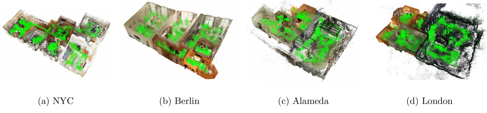
| Scene | Images | Registered | AUC@3° | Peak GPU | Runtime |
|---|---|---|---|---|---|
| NYC | 990 | 990 | 95.33 | 5.35 GiB | 3.26 h |
| Berlin | 1,511 | 1,508 | 92.85 | 7.70 GiB | 8.71 h |
| Alameda | 1,734 | 1,734 | 94.75 | 8.70 GiB | 9.30 h |
| London | 1,874 | 1,865 | 93.92 | 9.33 GiB | 12.56 h |
| All | 6,109 | 6,097 (99.8%) | < 10 GiB |
RoMa v2, Na = 1,024, k = 5, published intrinsics, one RTX PRO 6000. Exhaustive matching on London would need about 1.76 million image pairs.
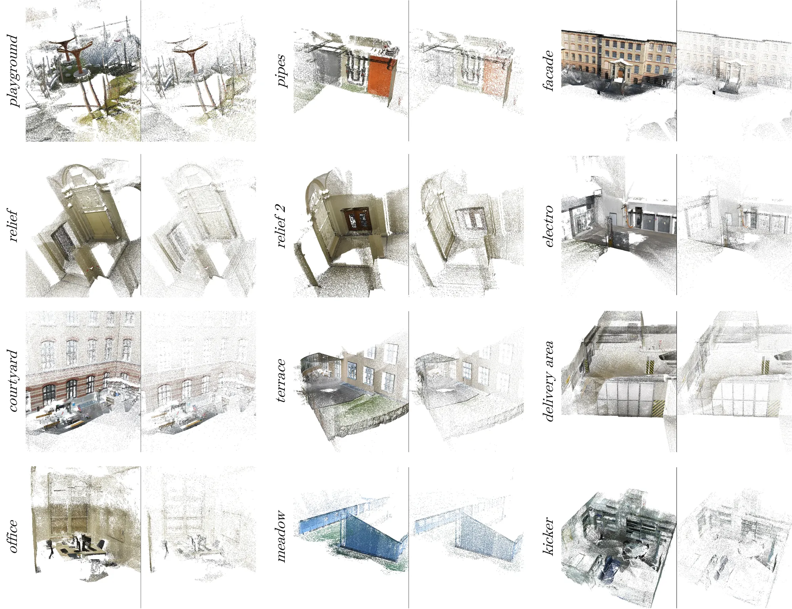